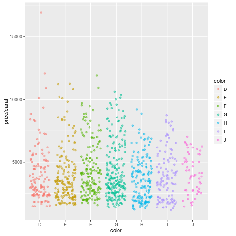

Overview
R Markdown combines markdown (an easy to write plain text format) with embedded
R code chunks. When compiling R Markdown documents, the code components can be
evaluated so that both the code and its output can be included in the final
document. This makes analysis reports highly reproducible by allowing to automatically
regenerate them when the underlying R code or data changes. R Markdown
documents (.Rmd files) can be rendered to various formats including HTML and
PDF. The R code in an .Rmd document is processed by knitr, while the
resulting .md file is rendered by pandoc to the final output formats
(e.g. HTML or PDF). Historically, R Markdown is an extension of the older
Sweave/Latex environment. Rendering of mathematical expressions and reference
management is also supported by R Markdown using embedded Latex syntax and
Bibtex, respectively.
Quick Start
Install R Markdown
install.packages("rmarkdown")
Initialize a new R Markdown (Rmd) script
To minimize typing, it can be helful to start with an R Markdown template and
then modify it as needed. Note the file name of an R Markdown scirpt needs to
have the extension .Rmd. Template files for the following examples are available
here:
- R Markdown sample script:
sample.Rmd
- Bibtex file for handling citations and reference section:
bibtex.bib
Users want to download these files, open the sample.Rmd file with their preferred R IDE
(e.g. RStudio, vim or emacs), initilize an R session and then direct their R session to
the location of these two files.
The metadata section (YAML header) in an R Markdown script defines how it will be processed and
rendered. The metadata section also includes both title, author, and date information as well as
options for customizing the output format. For instance, PDF and HTML output can be defined
with pdf_document and html_document, respectively. The BiocStyle:: prefix will use the
formatting style of the BiocStyle
package from Bioconductor.
---
title: "My First R Markdown Document"
author: "Author: First Last"
date: "Last update: 29 May, 2016"
output:
BiocStyle::html_document:
toc: true
toc_depth: 3
fig_caption: yes
fontsize: 14pt
bibliography: bibtex.bib
---
Render Rmd script
An R Markdown script can be evaluated and rendered with the following render command or by pressing the knit button in RStudio.
The output_format argument defines the format of the output (e.g. html_document). The setting output_format="all" will generate
all supported output formats. Alternatively, one can specify several output formats in the metadata section as shown in the above example.
rmarkdown::render("sample.Rmd", clean=TRUE, output_format="html_document")
The following shows two options how to run the rendering from the command-line.
$ echo "rmarkdown::render('sample.Rmd', clean=TRUE)" | R --slave
$ Rscript -e "rmarkdown::render('sample.Rmd', clean=TRUE)"
Alternatively, one can use a Makefile to evaluate and render an R Markdown
script. A sample Makefile for rendering the above sample.Rmd can be
downloaded here.
To apply it to a custom Rmd file, one needs open the Makefile in a text
editor and change the value assigned to MAIN (line 13) to the base name of
the corresponding .Rmd file (e.g. assign systemPipeRNAseq if the file
name is systemPipeRNAseq.Rmd). To execute the Makefile, run the following
command from the command-line.
$ make -B
R code chunks
R Code Chunks can be embedded in an R Markdown script by using three backticks
at the beginning of a new line along with arguments enclosed in curly braces
controlling the behavior of the code. The following lines contain the
plain R code. A code chunk is terminated by a new line starting with three backticks.
The following shows an example of such a code chunk. Note the backslashes are
not part of it. They have been added to print the code chunk syntax in this document.
```\{r code_chunk_name, eval=FALSE\}
x <- 1:10
```
The following lists the most important arguments to control the behavior of R code chunks:
r: specifies language for code chunk, here Rchode_chunk_name: name of code chunk; this name needs to be uniqueeval: if assigned TRUE the code will be evaluatedwarning: if assigned FALSE warnings will not be shownmessage: if assigned FALSE messages will not be showncache: if assigned TRUE results will be cached to reuse in future rendering instancesfig.height: allows to specify height of figures in inchesfig.width: allows to specify width of figures in inches
For more details on code chunk options see here.
Learning Markdown
The basic syntax of Markdown and derivatives like kramdown is extremely easy to learn. Rather
than providing another introduction on this topic, here are some useful sites for learning Markdown:
Tables
There are several ways to render tables. First, they can be printed within the R code chunks. Second,
much nicer formatted tables can be generated with the functions kable, pander or xtable. The following
example uses kable from the knitr package.
library(knitr)
kable(iris[1:12,])
Sepal.Length Sepal.Width Petal.Length Petal.Width Species
5.1 3.5 1.4 0.2 setosa
4.9 3.0 1.4 0.2 setosa
4.7 3.2 1.3 0.2 setosa
4.6 3.1 1.5 0.2 setosa
5.0 3.6 1.4 0.2 setosa
5.4 3.9 1.7 0.4 setosa
4.6 3.4 1.4 0.3 setosa
5.0 3.4 1.5 0.2 setosa
4.4 2.9 1.4 0.2 setosa
4.9 3.1 1.5 0.1 setosa
5.4 3.7 1.5 0.2 setosa
4.8 3.4 1.6 0.2 setosa
Plots generated by the R code chunks in an R Markdown document can be automatically
inserted in the output file. The size of the figure can be controlled with the fig.height
and fig.width arguments.
library(ggplot2)
dsmall <- diamonds[sample(nrow(diamonds), 1000), ]
ggplot(dsmall, aes(color, price/carat)) + geom_jitter(alpha = I(1 / 2), aes(color=color))

Sometimes it can be useful to explicitly write an image to a file and then insert that
image into the final document by referencing its file name in the R Markdown source. For
instance, this can be useful for time consuming analyses. The following code will generate a
file named myplot.png. To insert the file in the final document, one can use standard
Markdown or HTML syntax, e.g.: <img src="Rbasics_files/myplot.png"/>.
png("myplot.png")
ggplot(dsmall, aes(color, price/carat)) + geom_jitter(alpha = I(1 / 2), aes(color=color))
dev.off()
## png
## 2

Inline R code
To evaluate R code inline, one can enclose an R expression with a single back-tick
followed by r and then the actual expression. For instance, the back-ticked version
of ‘r 1 + 1’ evaluates to 2 and ‘r pi’ evaluates to 3.1415927.
Mathematical equations
To render mathematical equations, one can use standard Latex syntax. When expressions are
enclosed with single $ signs then they will be shown inline, while
enclosing them with double $$ signs will show them in display mode. For instance, the following
Latex syntax d(X,Y) = \sqrt[]{ \sum_{i=1}^{n}{(x_{i}-y_{i})^2} } renders in display mode as follows:
Citations and bibliographies
Citations and bibliographies can be autogenerated in R Markdown in a similar
way as in Latex/Bibtex. Reference collections should be stored in a separate
file in Bibtex or other supported formats. To cite a publication in an R Markdown
script, one uses the syntax (@<id1>) where <id1> needs to be replaced with a
reference identifier present in the Bibtex database listed in the metadata section
of the R Markdown script (e.g. bibtex.bib). For instance, to cite Lawrence et al.
(2013), one uses its reference identifier (e.g. Lawrence2013-kt) as <id1> (Lawrence et al., 2013).
This will place the citation inline in the text and add the corresponding
reference to a reference list at the end of the output document. For the latter a
special section called References needs to be specified at the end of the R Markdown script.
To fine control the formatting of citations and reference lists, users want to consult this
the corresponding R Markdown page.
Also, for general reference management and outputting references in Bibtex format Paperpile
can be very helpful.